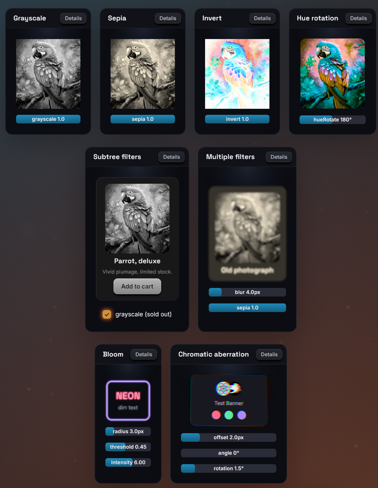

Filters
The filter style runs a chain of GPU shader passes over a node's rendered
result: the node itself and its whole subtree, as one image. bevy-react
ships fourteen filters (blur, color adjustments, bloom, drop shadows,
outlines, gradient recolors and a pinch distortion), and apps can register
their own.
Usage
<image src="images/parrot.png" style={{ filter: { name: "grayscale" } }} />A chain runs its entries in array order, each one over the previous one's output:
<node
style={{
filter: [{ name: "blur", params: { radius: 4 } }, { name: "sepia" }],
}}
>
<text>Old photo</text>
</node>Chains
The value is one { name, params } entry or an ordered array of entries.
paramsand every param in it are optional. An omitted param takes the filter's default, which for built-ins is a visible effect, unlike CSS: a bare{ name: "blur" }is a 20px blur, and a bare{ name: "grayscale" }is full grayscale.- Names and params are typed from your generated
bevy.ts, which lists the built-ins and your own filters (see TypeScript codegen). Without generated bindings the field accepts no value. - Length params take a number of logical pixels or a string like
"12px". Angle params take degrees, or a string such as"0.5turn"or"1rad". Color params take a CSS color string. - An entry with an unknown name is skipped with a
filterUnknowndevtools warning, and an entry with invalid params (an unknown param, a%blur radius) with afilterParamswarning. The rest of the chain still runs. - Morph filters (
crossfade,linearWipe,pixelize) belong tomorphFilterand are rejected here the same way. - An empty array is the same as no filter.
What gets filtered
- A non-empty
filterpromotes the node to a composited layer: the subtree is rendered into a texture once, and the chain runs over that texture. Changing a param re-runs only the filter passes, not the content, so animating params is cheap. - The image includes the node's own background and border. It works on a
leaf too: an
<image>, a<text>or an empty colored<node>. - Filters that reach outside the content (a blur, a glow, a shadow, an outline) enlarge the layer by their reach on every side, so their effect is not cut off at the node's edge. The reach of a chain is the sum of its entries' reaches.
- An ancestor's
overflowclipping clips the filtered result, as on the web. opacityon the same node fades the filtered result as a whole.filterandbackdropFilterare independent and can be combined on one node.
Built-in filters
Each table lists the params and their defaults. Lengths are logical pixels and angles are degrees.
Color adjustments
Each takes one param and recolors every pixel, keeping its alpha:
| Filter | Param | Default | Effect |
|---|---|---|---|
brightness |
amount |
1 |
Multiplies the color: 0 is black, above 1 brightens |
contrast |
amount |
1 |
Scales the distance from mid-gray: 0 is flat gray |
saturate |
amount |
1 |
0 is grayscale, above 1 oversaturates |
grayscale |
amount |
1 |
Mix toward grayscale: 0 none, 1 full |
sepia |
amount |
1 |
Mix toward sepia: 0 none, 1 full |
invert |
amount |
1 |
Mix toward the inverted color: 0 none, 1 full |
hueRotate |
angle |
0 |
Rotates the hue around the color wheel |
The defaults follow CSS: brightness, contrast and saturate default to
no change, grayscale, sepia and invert to the full effect.
blur
A Gaussian blur.
| Param | Default | Effect |
|---|---|---|
radius |
20 |
Blur radius; the blur reaches three times this far. |
bloom
A glow: bright areas bleed light over their surroundings.
| Param | Default | Effect |
|---|---|---|
radius |
12 |
How far the glow spreads (it reaches three times this far) |
threshold |
0.7 |
Brightness (0 to 1) above which pixels glow |
intensity |
1 |
Strength of the glow added on top; 0 is no effect |
threshold is perceived brightness: 1 makes nothing glow, 0 makes
everything glow.
chromaticAberration
Color fringing: the red channel shifts one way, blue the opposite way, and green stays.
| Param | Default | Effect |
|---|---|---|
offset |
4 |
Shift distance of the red and blue channels |
angle |
0 |
Shift direction, clockwise from the +x axis (0 is right) |
rotation |
0 |
Swirl: red turns this many degrees about the center, blue the other way |
rotation is a plain number of degrees (no unit strings). The swirl grows
toward the edges and leaves the center clean.
gradientMap
Recolors the content with a linear gradient laid across the node, keeping the content's alpha. On text, this is gradient text.
| Param | Default | Effect |
|---|---|---|
angle |
0 |
Gradient direction: 0 points up, clockwise, like backgroundGradient |
stops |
#38bdf8 to #a78bfa |
Up to six { color, position? } stops |
amount |
1 |
Mix from the original color (0) to the gradient (1) |
<text
style={{
fontSize: 48,
filter: {
name: "gradientMap",
params: {
angle: 120,
stops: [
{ color: "#38bdf8" },
{ color: "#a78bfa", position: 0.6 },
{ color: "#f472b6" },
],
},
},
}}
>
Gradient
</text>positionis a fraction from0to1along the gradient line, not a percentage. Missing positions are spread evenly, as in CSS.- The gradient spans the node's border box; the reach of other filters in the chain does not stretch it.
- A stop's alpha scales the mix locally: a transparent stop leaves the original color.
- Colors interpolate in linear RGB, which can differ slightly from the same
stops in
backgroundGradient.
outline
A ring of color around the content's silhouette, drawn under the content: outlined text, sticker-style icons.
| Param | Default | Effect |
|---|---|---|
width |
2 |
Ring width |
color |
"black" |
Ring color |
softness |
0 |
Feathers the outer edge over this many more pixels, like a glow |
The outline follows whatever the chain has produced so far:
[gradientMap, outline] outlines the recolored glyphs.
shadow
A drop shadow of the content's silhouette, like CSS drop-shadow(), drawn
under the content.
| Param | Default | Effect |
|---|---|---|
color |
rgba(0,0,0,0.6) |
Shadow color |
offsetX |
0 |
Horizontal offset; positive moves right |
offsetY |
4 |
Vertical offset; positive moves down |
spread |
6 |
Blur radius of the shadow (not a CSS spread) |
Unlike boxShadow, which shadows the node's box, shadow follows the
shape of what is drawn: glyphs, transparent images, rounded children.
pinch
Squeezes the content toward a point, or bulges it away, with optional lighting that shades the distortion like a dented surface.
| Param | Default | Effect |
|---|---|---|
x, y |
0.5 |
Center of the effect, 0 to 1 across the node |
strength |
0.5 |
1 is a full pinch, -1 a full bulge, 0 no effect |
radius |
0.8 |
Size of the effect, as a fraction of the node's larger side |
light |
0 |
Diffuse shading; 1 is nominal, more overdrives |
lightAngle |
-135 |
Where the light comes from, clockwise from +x (-135 is top-left) |
gloss |
0 |
White specular highlight; 1 is nominal |
glossSize |
0.3 |
Highlight size, from 0 (a pinpoint) to 1 (a broad sheen) |
outerSoftness |
0.5 |
How the effect meets its rim: 0 a crease, 1 imperceptible |
innerSoftness |
0.5 |
How it peaks at its center: 0 a point, 1 a flat floor |
Every param is relative to the node, so the effect scales with it. x and
y use the same 0 to 1 coordinates as pointer events, so a pinch can
follow the cursor directly:
import { useSharedValue, withSpring, withTiming } from "bevy-react";
function PinchCard() {
const strength = useSharedValue(0);
const x = useSharedValue(0.5);
const y = useSharedValue(0.5);
return (
<node
onPointerDown={(e) => {
x.value = e.x;
y.value = e.y;
strength.value = withTiming(0.6, { duration: 120 });
}}
onPointerUp={() => {
strength.value = withSpring(0);
}}
style={{
filter: {
name: "pinch",
params: {
x: { animated: x },
y: { animated: y },
strength: { animated: strength },
radius: 0.6,
},
},
}}
>
<text>Press me</text>
</node>
);
}The filter reference lists the same params with their types.
Transitions
transition: { filter } eases the chain between style states (the base
style, hoverStyle, pressStyle, focusStyle):
- Same names in the same order: every param interpolates. Colors ease in
linear RGB, and angles numerically (
350to10goes the long way). - One chain extends the other at the end, built-in filters only: the extra
entries fade through their no-effect values, such as a blur from radius
0or a shadow from transparent. They do not start from the defaults. - Anything else (different names, a reordered chain, a custom filter added) swaps at the halfway point.
- Easing to no chain at all, by removing
filteror setting[], snaps: the filter disappears at once.
Keep a no-effect entry in the base style when the filter should fade out as well as in:
<node
style={{
filter: { name: "blur", params: { radius: 0 } },
transition: { filter: { duration: 250 } },
}}
hoverStyle={{ filter: { name: "blur", params: { radius: 6 } } }}
/>A filter in a state style replaces the base chain as a whole. A
no-effect entry still keeps the node a composited layer, with its memory
and capture cost (see Layers).
Animated params
Any param accepts an inline { animated } binding to a shared value,
driven every frame on the Bevy side without re-rendering React:
import { useSharedValue, withTiming } from "bevy-react";
function Reveal() {
const radius = useSharedValue(12);
return (
<node
onPointerEnter={() => {
radius.value = withTiming(0);
}}
style={{
filter: {
name: "blur",
params: { radius: { animated: radius, seed: 12 } },
},
}}
/>
);
}- Values are in the param's units: pixels for lengths, degrees for angles.
Color params take an
interpolateColorbinding. gradientMapstops cannot be bound; itsangleandamountcan.- Bindings work in the base
styleonly. A binding inhoverStyle,pressStyleorfocusStyleis ignored with a warning. - Any binding on a
filterparam parkstransition: { filter }for that node: the binding wins. seedis the static value used in the binding's place for what is computed up front, such as how far a blur reaches outside the node. Size it for the largest value the animation reaches. Without a seed the filter's default is used (20px forblur).
See Animated values for the drivers.
Shader compilation
Each filter is a GPU pipeline, compiled in the background before its first
use. While a node's filters are compiling, the node is not drawn at all,
rather than flashing unfiltered. By default every built-in and registered
filter is compiled at startup, so this normally only shows if you narrow
it with precompile_filters:
use bevy_react::{FilterSelection, PrecompileFilters};
app.add_plugins(ReactPlugins.set(
ReactUiPlugin::default().precompile_filters(PrecompileFilters {
builtins: FilterSelection::Names(vec!["blur".into()]),
..default()
}),
));builtins, filters (your add_react_filter filters) and morphs (your
morph filters) each take All (the default), Names(..) or Off. A
shader that fails to compile keeps the node invisible and logs the error to
the terminal, naming the layer.
Limits
bloomandshadowdraw their effect over the node's unfiltered content, so every filter before them in the chain is lost:[blur, bloom]shows no blur. Put them first in the chain; the filters after them apply normally.- A
pinchbulge, and achromaticAberrationswirl (rotation), can only spill about 16px outside the node; beyond that they are cut off at a straight edge. Keep a margin inside the node, or a smaller strength. outlinestays crisp up to about 12 physical pixels of width plus softness; typical text outlines are 1 to 6 pixels.gradientMaptakes at most six stops.- A nested
<text>span cannot take a filter (spanLayerStylewarning); put it on the outer<text>or a wrapping<node>. - The layer limits apply: content painted outside the
node's border box (plus the chain's reach) is cut off, and inside a
<surface>the node renders unfiltered.

To write your own filters in WGSL, see Custom filters.
See filter in the style
reference, and bloom,
blur,
brightness,
chromaticAberration,
contrast,
gradientMap,
grayscale,
hueRotate,
invert,
outline,
pinch,
saturate,
sepia and
shadow in the filter reference.